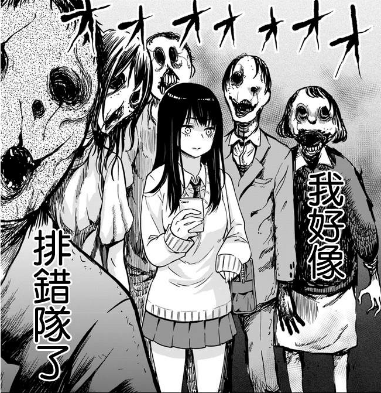
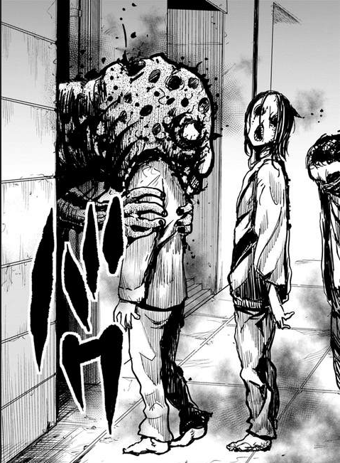

第二章 校园兵王天宫四叶？
“是要我保护这个女孩吗？”
矮小的神龛前，扎着长长马尾的少年看着传输到自己手机上的照片自言自语着，而把神龛也发出微弱的光似乎认可了少年的话一样。
“我们公会是为了处理各界失序事宜而存在的，可不是保镖公司，这样的要求，很为难啊。”少年抱着胳膊无奈的看着神龛说道。
“我明白，但是，这孩子的先辈曾于我有大恩，我已守护他们家数代，这孩子也是我看着长大的，实在不忍在弃她不顾。”微弱的光汇聚起来，一个小小的老人的身影出现在神龛上仰着头看着少年说道。
如果不答应的话，他大概会一直留下来保护那孩子，直到最后一丝力量也消失殆尽吧。
少年从眼前这衰弱的只剩下一点灵光的神明眼中看出了这样的决意。
明明只是曾经感受到了些许的温柔，却无怨无悔守护子孙数代。
真是愚蠢的神明啊……
“此世本就已经不适合你们生存，你的力量日渐衰弱，也守护不了这孩子多久，还是早日前往安息之地的好。虽然无法一直保护这孩子，但是，我可以许诺，在这孩子成年前，保护这孩子不受灾厄。”
“如此，便足矣，真的是非常感激您了，白龙大人。”小小的老人对着少年深深地鞠躬表示谢意。
言为心之咒，言出，则咒立，不可悔，不可违。
但是……
“我后悔了！”
以天宫四叶的名字转学到这个学校的少女站在学校的天台上，透过天台的铁丝网一脸死鱼眼的看着底下窗边的少女。
即使是再怎么衰弱，神明就是神明，被神明眷顾的人，运气一般不会太差，本以为，保护这种事情，也就是随随便便做个护符就能解决99%的事情，谁知道，一般的护符，连1%的问题都无法解决。
这孩子……能看见彼世，并且，似乎是能够清晰的目视彼世！
有一双好眼睛，但自身的力量却又非常的微弱，这样的眼睛，出现在自己这一类人身上是锦上添花，但出现在这样的普通人身上，不得不说就像是灾祸一样。
当你凝视深渊时，深渊，亦在凝视你。
她看得出见子已经很努力的在无视那些怪异，假装自己看不见它们，这份坚忍，连她也不得不动容，但，很多时候，并非你装作看不见，怪异就会离你而去。
你终究是看见了！
某个人突然跳楼了，某个人突然暴起杀人了，某个人突然做出怪异的行为了。
如果看不见，这些只不过的饭后谈资，一笑而过，而看见了，看见怪异事件背后的东西，这一切，都会被刻在心中，在心中沉淀，酝酿着。
就像是有看不见的丝线相连似得，在拥有那双眼睛的那一刻，就决定了这孩子必然会被怪异萦绕。
终有一天，见子，会看见的。
将见子引入那边的世界？
四叶在明了见子面临的情况时就考虑过这个提案，但，只是眼神好，在那边的世界一无是处。
看得到，他们几乎没有看不到这些东西的人，他们也有办法让看不到的人看到这些东西。
比起见子，单单天赋而言，她的朋友小華的天赋更胜一筹，强大的生命精气，就好像是肥肉一样，或者说黑夜的灯火一样，源源不断的吸引那些东西，弱小的会被灼烧殆尽，而强大的也大都会怕被灼伤而放弃。
可惜，小華的眼神并不好，看不见那些玩意。
这两个人能力要是能整合一下，即使不加以引导，大概也能在这边的世界成为小有名气的驱魔人吧。
可惜……
“啧，麻烦的偏科生……”四叶拾起一个小碎石子对着见子所在的窗户射了过去，把飘在窗外想要把头伸进去的恶灵射爆。
“嗯？错觉？”见子疑惑的看向窗外，刚刚好像有什么东西在外面……
“！！！这里是三楼吧，小華？”见子面色僵硬的看着好友问道。
“这不是当然的吗，你现在还头晕吗？”小華歪着脑袋奇怪的看着自己的好友，这个问题，她早上也问过呢。
“……”我什么也没有看见什么也没有看见……
见子拉着小華的手快步的从床边离开，现在已经放学了，她只想快点离开学校。
看着见子和小華离开，四叶也离开了天台。
见子的异常早就已经上报公会，能看见怪异的人，整个原世界不多见也不少见，并不是什么值得重视的身份，对于这样的人，如果遇到了危险了，公会的人撞见都会帮衬一二，但也仅此而已，听之任之，安排人保护是不可能的，安分点也许能安享晚年，不安分的，会因为好奇心死在某处绝地。
少侠，观你骨骼惊奇，必是百年难得一见的天才，拯救世界的任务就交给你了！
这种事，当然是不存在的。
公会不是慈善组织，同样也不缺人，守世界人才一抓一大把，即使很多人所属不是公会，但挖人怎么也比在这边捡个人培养划算，培养人是学校的事情，不是公会的事情，并且，公会，也并非是什么安全的地方，据四叶所知，公会以前就被人攻破过，而未来，也会被人攻破。
只是，见子是那位神明最后的愿望，公会不得不慎重处理，即使那位神明已经离开此世前往安息之地，但承诺应下便是结下了契约，公会不能不管，作为契约人的四叶更加没办法置之不理。
所以，【观察】，这是公会下达给四叶的任务，改名换姓，以天宫四叶的名字接近见子，观察见子，所有的观察报告汇总回公会后上头的人会做出最后的决定的。
……
“哇，排队的人好多啊！”
“不愧是五折啊……”
“快来，见子，不赶紧来排队的话，就要卖完了！”
“好好好……”
见子一边应着小華，一边低头翻着手机，看看这家甜点店的菜单上都有着什么。
“红天狗茸松饼看起来不错，蝎子巧克力片也让人难以割舍，啊……这是佛珠？”
“这家店的菜单，真的很奇怪。”轻飘飘的突然从耳边传来的声音吓了见子一跳。
“一百日元的佛珠样子的甜甜圈也挺有意思的。”俏丽的少女看着见子的手机屏幕浅浅的笑了笑。
“你是，天宫同学？”
“嗯，我是天宫四叶，叫我四叶就可以了，我记得你是班上的同学吧，请多多关照。”四叶点了点头笑着向见子伸出手。
“叫我见子就可以了，请多多关照。”见子慌慌张张的收起手机与四叶握了握手。
“我也很喜欢甜点，见子也喜欢吗？我们一起去排队吧。”
“我正……”刚刚想要回复四叶的见子面色一边。
好像……排错队了……
“见子，你不来排队吗？”
另一边的好友向见子发出疑问。
“走路的时候看手机可是是坏习惯是吧。”站在见子身边的四叶对着见子眨了眨眼睛，然后推着见子的肩膀向‘人’的队伍走去。
没错，见子拍着的，是属于灵的队伍，即使再怎么努力无视那些东西，但是不经意间的疏忽，总是会露出些许马脚，而这些，便足矣引起灵的注意。
前前后后排着队的灵正张着恐怖的大眼睛直勾勾的看着排错队的见子，有些，甚至还想要聚集过来。
【滚回去！】
在见子不经意间，四叶回头对着聚集过来的灵狠狠地瞪了一眼。
与见子不一样，他可不怕被灵知道自己能看见它们，甚至，四叶会很欣赏不怕死的想要和他深入交流的灵们。
想灰飞烟灭吗？
萦绕在四叶周身的庞大灵场让一边的灵望而却步，灵排队的尽头小巷子里伸出一个恐怖的怪兽头颅对着四叶发出一声咆哮。
【抱歉抱歉。】
四叶马上收起了威胁的气势，倒不是怂，而是那怪物虽然看着可怕，但却不是什么危险的东西，而是送灵的冥兽，或者说冥道，是生灵轮转的一部分。
不过，看着确实渗人就是了……
即使早已知晓这东西的四叶，对这东西的存在，也感到不太适应。
幸运的是，比起普通人类，因为某些原因，他自己在悠远的未来，在那一天到来的时候，大概，还有安息之地这一选择吧。
不用进这东西的嘴巴，真好！
【惊不惊喜，意不意外？但依旧不是正文，是番外，我爱死见子了，想哭又不能哭，太可爱了，据说，作者曾经画本子出身，所以，莫名的会有些色气……我似乎参加了污客的更新领取福袋的活动，有一个福袋拿，不知道在哪里……所以，你们还没有明白吗，本卷的主角是男的啊】